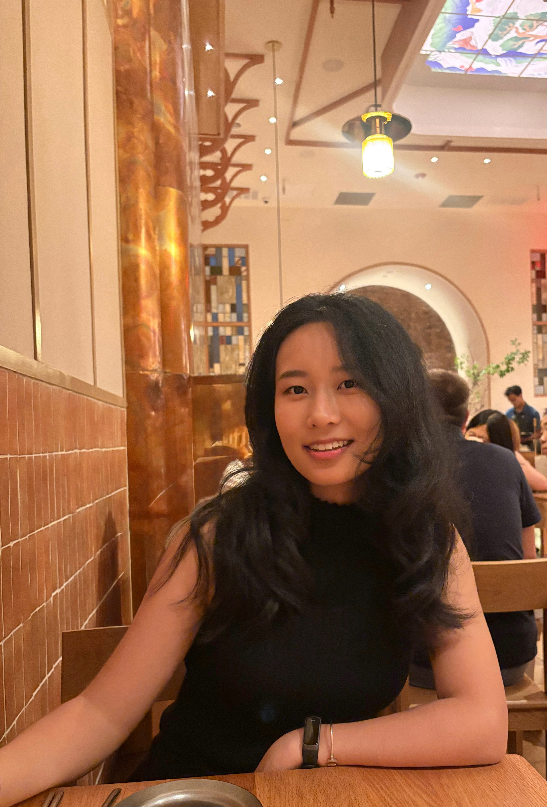
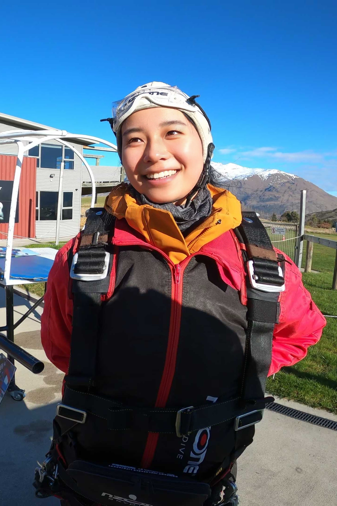

I design, prototype
and build
Hi, I'm Yueyi Lulu Wang. I'm a design engineer and creative technologist working at the intersection of product design, AI, and physical computing. I like turning complex technologies into experiences that feel clear, intuitive, and engaging.
My experience spans the Computational Design Lab, directed by Dr. Lydia Chilton; the Imaging and Vision Laboratory, directed by Dr. Shree Nayar; and the Design Tool Lab, directed by Dr. Tiffany Tseng, where I have worked across AI interfaces, creative tools, and interactive web systems.
I recently graduated from Columbia University with a double major in Computer Science and Visual Arts. That combination shapes how I work: I care deeply about both the logic behind a system and how people experience it, and I like moving between design, prototyping, engineering, and creative experimentation.

Outside of work, I’m always looking for a new restaurant to try.
I also love a little weightlessness—skydiving, bungee jumping, and anything up in the air.